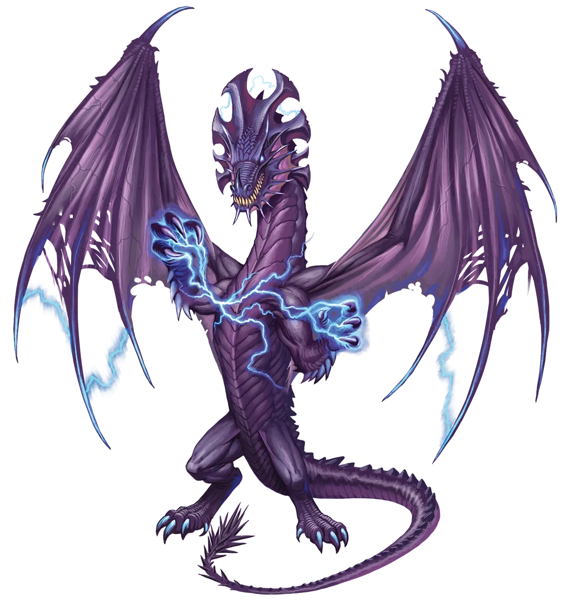
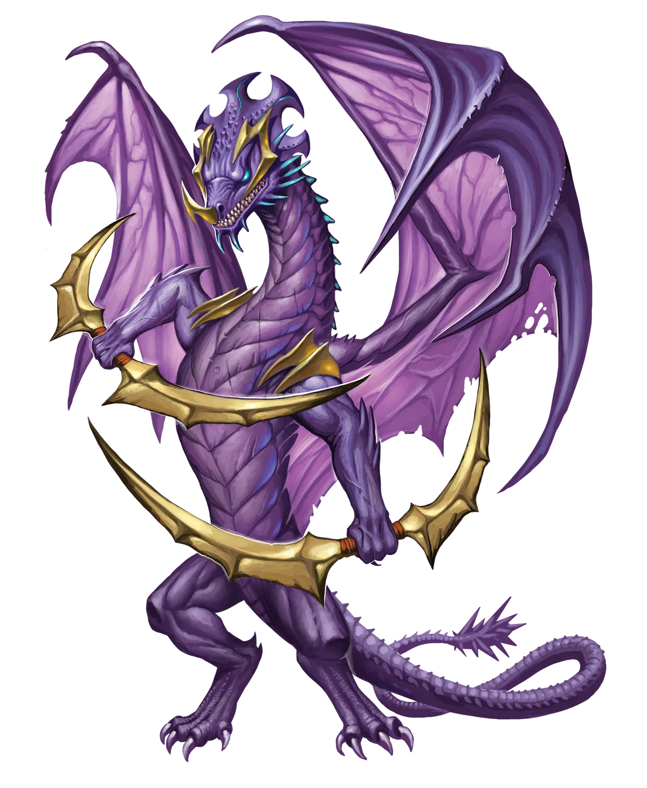

故作深沉还是敏感多思？
我怀疑你对一条名字叫“末日预言”、天生倾向于毁灭宇宙的龙，会给那些逆流而上成为永恒派的人带来各式各样的认知失调感到惊讶。虽然每个个体都是独一无二的，但通常有两种常见的行为。一些永恒天启龙，尽管摆脱了阿巴顿的绝对邪恶，却表现得极其故作深沉，并参与各种夸张的行为。另一些则变得特别敏感，不遗余力地对他人友善，形成一种与他们位面本性截然相反的反应。这两种反应并非两种截然不同的情绪，而可能是同一枚钱币的两面。
天启龙 Apocalypse Dragon |
|
|
全身布满坏疽般的创伤，灵魂为纯粹的邪恶所占据，传统派天启龙与恶魔一样，与阿巴顿位面紧密相连。他们寻求玷污生命、镇压希望，并且创造一个扭曲的、对他们原生位面的致敬。然而，并非所有天启龙都享受其本性中的这一面，极少数发现自身本性中这一面令人反感，并寻求超越它。永恒之光仪式代表了一条出路，因为天启龙在仪式过程中会削弱甚至切断与阿巴顿枯萎术的联系。这使得永恒天启龙能够自主选择自己的命运，许多人决定离开摆在他们面前的被污染之路。话虽如此，尽管他们可能深切地感到自己能做的远不止蹂躏和玷污，但他们并不总是知道在仪式之后自己还想做什么。有些人选择将自身天赋转向富有成效的事业，例如消除对某个区域具有实际减益作用的狂茂生长，比如瘟疫、吞噬性昆虫的侵扰、入侵物种、深渊语的枯萎术，或者掠夺成性的怪物。其他人则试图通过建设而非破坏来更进一步地将自己的过去抛在身后。然而，他们残留的本性与永恒之光仪式的双重驱动很少让他们能够过上平静或安宁的生活。此外，传统派天启龙对任何美好生活的幻想都构成了额外的威胁。传统派本就热衷于腐化和毁灭，他们的心脏随着阿巴顿的虚无主义而跳动，还有什么比粉碎那些寻求逃避末日之人的梦想更能传播他们的末日渴望呢？他们永恒派兄弟们很快就发现，自己背上画着一个巨大的目标。 永恒天启龙经常与其他冒险者结伴同行，不仅是为了分享力量和保护自己免受传统派亲族的突袭打击，也是为了为自己寻找目标。永光龙不知何故明白，为毁灭而毁灭一切并非他们潜力的极限，但有时需要他人来帮助这条龙探索他们还能成为什么。这并不意味着永恒天启龙有意识地意识到这种需要。他们可能需要一些时间才能接受这个事实，在这期间，他们可能会潜意识地寻求答案，表面看起来却似乎拒绝给出的答案。令人惊讶的是，这意味着他们可以与温和、耐心且睿智的盟友良好合作并从中学习，而这些特质在仪式之前都是天启龙深为鄙夷的。无论他们新生的愿望如何，许多永恒天启龙都倾向于选择能够让他们蹂躏和毁灭的职业，例如野蛮人、战士或术士。那些希望理解创造与毁灭循环的人可能会进一步拓宽视野，选择像奇械师这样的职业，使他们能够创造出一些新的、仍然具有巨大毁灭潜力的东西。 故作深沉还是敏感多思？ 我怀疑你对一条名字叫“末日预言”、天生倾向于毁灭宇宙的龙，会给那些逆流而上成为永恒派的人带来各式各样的认知失调感到惊讶。虽然每个个体都是独一无二的，但通常有两种常见的行为。一些永恒天启龙，尽管摆脱了阿巴顿的绝对邪恶，却表现得极其故作深沉，并参与各种夸张的行为。另一些则变得特别敏感，不遗余力地对他人友善，形成一种与他们位面本性截然相反的反应。这两种反应并非两种截然不同的情绪，而可能是同一枚钱币的两面。 天启龙特质 Apocalypse Dragon Traits 你出身于一脉散播荒芜与毁灭的天启龙世系。 |
  |